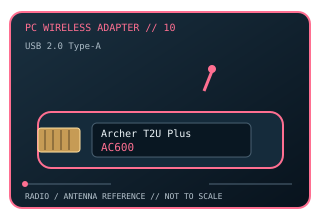

[ MODEL-SPECIFIC PC WI-FI HARDWARE ]
TP-Link Archer T2U Plus AC600 High-Gain USB Wi-Fi Adapter
Compact dual-band Wi-Fi 5 USB adapter with one adjustable 5 dBi high-gain antenna. This record documents the named model and its labeled revision scope; it is not a claim that similarly named variants share identical drivers or radio limits.

IDENTIFICATION: Match the full product name, model label and hardware revision with its manufacturer page before choosing a driver. Regional channel and OS support can vary.
Dedicated wireless specifications
| Cataloged product | TP-Link Archer T2U Plus AC600 High-Gain USB Wi-Fi Adapter |
|---|---|
| Wi-Fi generation / standards | Wi-Fi 5 (IEEE 802.11ac) on 5 GHz plus IEEE 802.11b/g/n on 2.4 GHz. |
| Radio bands, channels & width | 2.4 GHz and 5 GHz. 20/40 MHz channel widths at 2.4 GHz and up to 80 MHz at 5 GHz; typical U.S. channel examples 1–11 and 36–165, varying by regulatory domain and DFS availability. |
| Spatial streams / nominal link rates | 1×1 class: up to 200 Mb/s at 2.4 GHz and 433 Mb/s at 5 GHz (nominal AC600 class). |
| Host interface | USB 2.0 Type-A; no USB 3.x link is available on this model. |
| Antenna arrangement | One adjustable external 5 dBi high-gain omni-directional antenna. |
| Operating-system compatibility | TP-Link lists Windows 11/10/8.1/8/7/XP and selected macOS releases (commonly OS X 10.9–10.14, with separate revision-specific packages). Check exact hardware revision and OS driver availability before installing. |
| Bluetooth | No Bluetooth function. |
| Regulatory channel note | Dual-band 2.4/5 GHz only. Channel selection is subject to regional rules and driver support; DFS channels may be unavailable. |
Model-specific installation notes
The T2U Plus has an external antenna and USB 2.0 interface; it is distinct from the smaller Archer T2U Nano. Hardware revision is important when matching older macOS or Windows packages.
1 external antenna are shown in this model’s source documentation. Install only with the correct host connector and driver package; antenna placement, local regulation and access-point capabilities affect operation.
Manufacturer sources
- Archer T2U Plus official specificationsOfficial manufacturer source for product specifications, revision-specific software, or compatibility requirements.
- Archer T2U Plus manufacturer downloads and revision supportOfficial manufacturer source for product specifications, revision-specific software, or compatibility requirements.
Source pages may describe a hardware family or provide revision-selected downloads. Manufacturer regional restrictions and current OS support take precedence over generic interface fit.